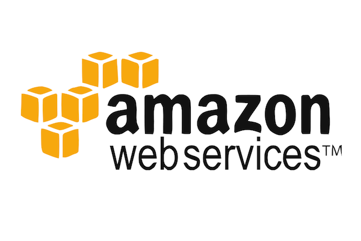

<img src="img/open-source.png" style="box-shadow: none"> <!-- Source inconnue, le plus ancien site incluant cette image selon Google est https://www.resourcespace.com/knowledge-base/open-source mentionnant l'OSI --> #### 2018/03/02 @ IMT Atlantique Note: Présentation des avantages et limites de l'Open Source en entreprise, et des projets open source réalisés à oui.sncf <!-- REX: demander à l'avance si étudiants déjà familiers avec GitHub/PRs --> ### Bonjour ! <div style="display: flex; align-items: center"> <div style="display: flex; flex-direction: column; text-align: left; font-size: 70%"> <p style="margin: 10px 0">**Lucas Cimon**</p> <p style="margin: 10px 0">Ingénieur diplômé de l'Ensimag</p> <p style="margin: 10px 0">Passé par: Nadeo, Amazon Web Services</p> <p style="margin: 10px 0">**#OpenSource #Python #a11y** (accessibilité)</p> <p style="margin: 10px 0">https://chezsoi.org</p> </div> </div> Note: - à oui.sncf depuis bientôt 3 ans - en ce moment, je contribue à... - "déclic" pour le logiciel libre progressif, relativement récent <!-- .element: style="font-size: 90%" --> ## Au programme aujourd'hui - introduction à l'_open source_ - l'_open source_ **en entreprise**: outils, avantages et limites - les projets _open source_ réalisés à **oui.sncf** - l'_open source_ et **vous** - _pause_ - **TP** 1ères contributions Note: demander qui a déjà contribué à un projet OSS dans la salle # OSS ? <small class="fragment">117</small> ## Un peu d'histoire <ul> <li>concept datant des années 1950</li> <li class="fragment">à l'origine, le code source était fourni **par défaut**</li> <li class="fragment">le terme a été inventé en 1998 par des pionniers du **logiciel libre**</li> <li class="fragment">dans la continuité de _**La Cathédrale et le Bazar**_: <q>Given enough eyeballs, all bugs are shallow</q> </li> </ul> <small class="fragment">([frise chronologique](https://create.piktochart.com/output/2385023-history-of-the-open-source-movem))</small> Note: Le terme a été inventé pour populariser le mode de développement de Netscape. Quelqu'un sait ce qu'était Netscape ? -> ancêtre de Firefox Eric S. Raymond à la fois auteur de l'essai quelques mois plus tôt et présent à palo Alto quand le terme a été inventé > In the 1950s and 1960s, computer operating software and compilers were delivered as a part of hardware purchases without separate fees. > At the time, source code, the human-readable form of software, was generally distributed with the software providing the ability to fix bugs or add new functions. > Universities were early adopters of computing technology. > Many of the modifications developed by universities were openly shared, in keeping with the academic principles of sharing knowledge ## Open source = logiciel libre ? Note: en quoi pensez-vous qu'ils diffèrent ? <!-- .element: style="font-size: 90%" --> ### oui et non ["En quoi l'open source perd de vue l'éthique du logiciel libre" sur gnu.org](https://www.gnu.org/philosophy/open-source-misses-the-point.html) <img alt="Logo GNU" src="img/220px-The_GNU_logo.png" style="box-shadow: none"> Note: Quand on dit qu'un logiciel est « libre » [free], on entend par là qu'il respecte les libertés essentielles de l'utilisateur : la liberté de l'utiliser, de l'étudier, de le modifier et d'en redistribuer des copies, modifiées ou non. - C'est une question d'éthique, mais aussi de license - La définition de l'Open Source Initiative est proche de celle de la FSF, mais le terme est malheureusement souvent utilisé avec un sens plus simpliste - Il est très intéressant de noter la confusion autour du terme anglais "free", auxquels les hactivistes anglophones ajoutent souvent "libre" ### Logiciel libre <figure> <img alt="4 libertés du logiciel libre" src="img/quatre-libertes-du-logiciel-libre.png" style="box-shadow: none"> <figcaption>CC0 Pulic Domain - [openclipart.org](https://openclipart.org/detail/256647/four-freedoms-of-free-software-redux)</figcaption> </figure> Note: question pour tester s'ils suivent quel est le pb avec cette image ? - la liberté d'utiliser, sans condition - la liberté d'étudier le logiciel - la liberté de modifier - la liberté de diffuser ## Et aujourd'hui ? Note: le modèle de développement open source a fait ses preuves, et comporte de nombreux attraits pour les entreprises comme nous allons le voir Quand à l'éthique et au projet de société du logiciel libre, je vous invite à y réfléchir et vous faire un avis dessus par vous même ## openwahsing ? - Open **data** - Open **knowledge** - Open **access** - Open **politics** Note: le terme est péjoratif, mais personnellement je trouve fantastique comme cette idée a pu se diffuser ! Open access -> spécifique au domaine de l'édition scientifique ## Quelques acteurs en France      ## Comment on forge ? <figure> <figcaption>Réalisé avec [nuagesdemots.fr](https://www.nuagesdemots.fr)</figcaption> </figure> Note: demander "quels termes ne vous sont pas familiers" ? - forge = terme désignant une plateforme de développement logiciel collaboratif - lts = long term support <!-- 1 code~source 1 documentation 1 version~control~software 1 releases 1 bug~tracker 1 artifact 1 linter 1 tests~unitaires 1 pipeline~d'intégration~continue 1 mailing~list 1 alpha/beta/lts 1 patch --> ### La poésie des licenses Les [principales](https://choosealicense.com): - GPL (et LGPL / AGPL) - Apache 2 - MIT Note: mentionner aussi CreativeCommons - GPL3 : copyleft fort, a employer pour des libs - LGPL 3 : copyleft faible, a employer pour des libs - AGPL 3 : dérivée de la GPL v3 (ie. copyleft) avec une clause supplémentaire exigeant de partager les sources/modifications quand l’application est proposée en ligne C’est donc une licence adaptée pour les applications "finales" (par opposition aux libs), lesquelles ne sont pas véritablement protégées par la GPL (mettre une application en ligne ce n’est pas la « redistribuer »). - Apache 2 : pas de copyleft, licence très permissive ### La poésie des licenses <figure> <figcaption>[Image originale](https://commons.wikimedia.org/wiki/File:Virus_detected_warning.jpg): Anwarpta [CC BY-SA 4.0](https://creativecommons.org/licenses/by-sa/4.0)</figcaption> </figure> Note: - Copyleft licenses contamination from dependencies -> des outils existent pour automatiser cela si vous avez des dépendances en cascade - Typiquement, si une de vos dépendances est sous une license copyleft (ex: GPL & AGPL), vous devez utilisez cette license (ou une license compatible) pour votre projet. ### La poésie des licenses Des resources bien utiles : - https://opensource.guide/legal/ - https://choosealicense.com - https://tldrlegal.com/license/ ### Modèles de gouvernance Source: [opensource.guide](https://opensource.guide/leadership-and-governance/) * benevolent dictator * meritocracy / liberal contribution * Tech Lead + Core Committers Note: détermine QUI a les droits d'admin sur le projet -> question importante en contecte entreprise * benevolent dictator: there is an identified project facilitator * meritocracy / liberal contribution: everyone (with merit) commits and is responsible for everything ## L'open source en entreprise <div class="fragment"> <p>Distinguer :</p> <ul> <li>**monétiser** un produit OSS</li> <li>**utiliser** des outils OSS</li> <li>**adopter** le mode développement OSS</li> </ul> </div> Note: à oui.sncf: 2 & 3 1er & 2e point abordés très rapidement + à la fin je présenterai des exemples concrets ### Buisness models OSS <ul> <li class="fragment">donations</li> <li class="fragment">patronage</li> <li class="fragment">freemium + premium</li> <li class="fragment">facturer le support / l'infogérance</li> <li class="fragment">version "privée" payante</li> </ul> Note: ne pas croire que ces modèles concernent uniquement les "grosses entreprises", de petites structures à Nantes en vivent ! ### Outils OSS <u>**Pros**:</u> gratuits, éprouvés, extensibles, debuggables, etc. <u>**Cons**:</u> - support contractuel ? - _forks_ & maintenabilité - ⚠ projects inactifs ou mourrant **PS**: [choose boring technology](http://mcfunley.com/choose-boring-technology) Note: "outils" au sens large: apps, libs, usine logicielle ### Outils OSS: risques Les solutions _open source_ sont utilisées par **78%** des entreprises sondées, et **66%** envisagent d'abord les solutions _open source_ ([Black Duck report 2015](https://www.blackducksoftware.com/about/news-events/releases/companies-lack-open-source-policies)) > I always assumed, (as the rest of the world) that the OpenSSL team was large, active and well resourced **64%** des projets Github les plus populaires ont un **_truck factor_ de 1-2 ** ([2017 study](http://peerj.com/preprints/1233.pdf)) Note: truck factor = developpers are critical to those projects - citation -> Steve Marquess, fondateur de la fondation OpenSSL en 2008 - source: The Dramatic Consequences of the Open Source revolution - Heather Miller ### Free-rider problem <figure> <figcaption>CC0 Pulic Domain - [pixabay.com](https://pixabay.com/fr/hommes-moto-stunt-v%C3%A9lo-vintage-2028249/)</figcaption> </figure> > When too many people uses an open source software project without contributing to it. Note: most promising solution : privileged groups, those who receive "selective benefits" ex: "prominently showcase devs contributions & bug fixes" ### Open sourcer son code: avantages ["Le Logiciel Libre Et L'entreprise" - Tangui Morlier, 2010](http://www.april.org/le-logiciel-libre-et-lentreprise-par-tangui-morlier-lup-le-5-novembre-2010) - améliore la sécurité - gain d'expérience pour les devs - ++ image d'expertise technique et recrutement - améliore la communication interne - gratifiant pour les développeurs Note: ancien président de l'April com interne => les devs rentrent en contact avec des personnes dans d'autres BU ### Open sourcer son code: avantages ["Managing Open-Source contributions in large organizations - James Ward - Devoxx 2017"](https://www.youtube.com/watch?v=dQROOwIQ0Ww) * build trust with customers / partners * create an ecosystem around a library / tool * internal forks are a maintenance nightmare * show leadership in the software industry * recruiting ### Open sourcer son code: avantages \+ nombreux outils **gratuits** pour les projets OSS ! <figure> <figcaption>CC0 Pulic Domain - [pixabay.com](https://pixabay.com/fr/argent-dollars-il-pleut-chute-2831324/)</figcaption> </figure> Note: j'en reparle après <!-- .element: style="font-size: 80%" --> ## Open sourcer son code: coût > Opening up means arranging the code to be comprehensible to complete strangers, setting up a development web site and email lists, and often writing documentation for the first time. > All this is a lot of work. > And of course, if any interested developers do show up, there is the added burden of answering their questions for a while before seeing any benefit from their presence. Note: source -> ["Producing Open Source Software: How to Run a Successful Free Software Project" by Karl Fogel](https://producingoss.com) Difficile à estimer à l'avance. A minimal, je recommande: + 1/2 ETP de community mgr / comm' (interne, pour présenter démarche et documenter pratiques, + externe: articles en ligne, confs, etc.) + 1/2 ETP d'accompagnement tech, pour migrer des projets "à potentiel": accompagnement des équipes, nettoyage du code, doc tech, setup outils OSS en ligne (demo cloud, intégrations GitHub...), etc. + valoriser le rôle / la responsabilité d'être lead tech / mainteneur de projet OSS ### Open sourcer son code: risques <figure> <figcaption>CC0 Pulic Domain - [pixabay.com](http://maxpixel.freegreatpicture.com/Playing-Cards-Card-Hand-Poker-Casino-Cards-Magic-2886284)</figcaption> </figure> - **légaux** - cf. [SAPER, US, PDF, 2017](http://www.bswd.com/CNSV-1304-Saper%28IP-SIG%29.pdf) - **image** ➡ Ø "bad buzz" connu ? - **sécurité** - cf. [CSO article, 2017](https://www.csoonline.com/article/3157377/application-development/report-attacks-based-on-open-source-vulnerabilities-will-rise-20-percent-this-year.html) Note: respect du droit d'auteur: vous n'avez pas le droit de dire que c'est vous qui l'avez fait - sécurité : probablement le point le plus important de mon expérience, paradoxalement benéficier d'outils comme snyk peut-être un gros + vis à vis de certaines attaques ## OSS: concrètement [github.com/ripienaar/free-for-dev](https://github.com/ripienaar/free-for-dev) - licenses d'outils gratuits - _web hosting_ - _CI as a service_ - _monitoring_ - etc. etc. Note: catalogue des outils du marché que j'ai testé permettant de grandement valoriser un projet OSS + ça va ressemble à de la promo; il ne s'agit que d'exemples et il existe bcp d'offres concurrentes + insister: tout ça est gratuit **pour les projets OSS seulement**, et nécessitent parfois une intégration à GitHub + citer exemple Intellij IDE ## OSS: SAAS Je vous recommande: [](https://simonwillison.net/2017/Oct/17/free-continuous-deployment/) ([simonwillison.net](https://simonwillison.net/2017/Oct/17/free-continuous-deployment/) Oct 2017) Note: GitHub + Travis CI + Heroku + Sentry + Slack <!-- .element: style="font-size: 90%" --> ## GitHub: _builtins_ - repo `git` + wiki + _releases_ - _issues_ & notifications - _forks_ & _pull requests_, avec revues de code - project boards : Kanban (alt: [waffle.io](https://waffle.io/), [ZenHub](https://www.zenhub.com), [Zube](https://zube.io/)...) - pages [github.io](https://github.io) : hébergement de sites statiques - support de standards implicites de l'OSS: `README.md`, `LICENSE`, `CONTRIBUTING.md`, `CHANGELOG.md`... Note: + template pour PRs & issues exemple de board: https://github.com/voyages-sncf-technologies/vboard/projects/1 <!-- .element: style="font-size: 80%" --> ## GitHub: intégrations - <img alt="Logo Code Climate" src="img/code-climate-logo.jpg" style="max-height: 8rem"> / / - `mention-bot`: / `cla-assistant`: - dépendances : [<img alt="Logo Sibbell" src="img/Sibbell-Logo.png" style="max-width: 12rem">](https://sibbell.com) + [](https://snyk.io) / GitHub security alerts - supervision : [](https://sentry.io) Note: anecdote VersionEye +/- coulé par GitHub security alerts + intégration GitHub Sentry capable de corréler une erreur JS avec un numéro de commit !! + mais aussi Dependabot/libraries.io/requires.io ### Mais aussi...  ### Hébergement  <img alt="Logo Heroku" src="img/heroku-logo.svg" style="max-height: 15rem; margin: 0 2rem"> etc. etc. Note: + Github/Gitlab pages <!-- .element: style="font-size: 90%" --> ### _Continuous Integration_ `.travis.yml` : ```ruby language: java script: mvn install jdk: - oraclejdk8 - oraclejdk9 - openjdk7 ``` Note: + AppVeyor pour Windows, Wercker Jenkins là à titre de comparaison, pas d'offre SAAS gratuite actuellement ### Chat, doc & i18n  <img alt="Logo discord" src="img/discord-logo.png" style="max-height: 8rem">  Note: also i18n -> POEditor + mailing list/Google Group/IRC ## Open source à oui.sncf ### oui.sncf <br>➡ [jobs.oui.sncf](https://jobs.oui.sncf) Note: mentionner rebranding ### oui.sncf - Les projets OSS [](https://voyages-sncf-technologies.github.io/hesperides-gui/) + [](https://github.com/voyages-sncf-technologies/hesperides-jenkins-lib) **Hesperides** : stockage & API REST de gestion de configurations Note: + Groovy shared lib for Jenkins ### oui.sncf - Les projets OSS [](https://github.com/voyages-sncf-technologies/zucchini-ui) **Zucchini** : dashboard & historisation de tests BDDs ### oui.sncf - Les projets OSS [](https://github.com/voyages-sncf-technologies/zucchini-ui) **V.Board** : dashboard d'épingles & partage de liens Note: pour veille techno et comm' interne ### oui.sncf - Les projets OSS [](https://github.com/voyages-sncf-technologies/tock) **tock** : chatbots toolkit ### oui.sncf - REX  Note: - autonomie & auto-organisation: oui - gratuit: non - prochain objectif: hackathon de contribution ## L'open source et vous Note: prévenir -> dernière courte partie avant la pause [](https://dev.to/ben/its-perfectly-fine-to-only-code-at-work-dont-let-anyone-tell-you-otherwise--25i3) ### Quel intérêt pour **VOUS** ? - apprendre - CV / recrutement - échanges & rencontres Note: - permet également d'avoir une nouvelle corde à son arc en terme d'options lors d'un choix de techno: un fork peut parfois constituer un gros gain de temps - recrutement: joue sur la **sélection** ET la **différenciation** en entretien - choix stratégique de votre temps: à une époque, il était + + éthique <!-- .element: style="font-size: 80%" --> ## Quel intérêt pour **VOUS** ? Etude de Sonali K. Shah, 2006: > The primary reasons cited by need-based participants for contributing code include reciprocity ("Others helped me, so I should help them"), future improvements (get feedback, improve their code), source code commits ("so that their functional needs will continue to be met as the software evolves"), and career concerns ("reputation, skill development...") Note: source -> "Motivation, Governance, and the Viability of Hybrid Forms in Open Source Software Development", <!-- .element: style="font-size: 80%" --> ## Quel intérêt pour **VOUS** ? > Over half of long-term open source participants describe their open source work as a fun and challenging hobbylike activity > Contribution is necessary to obtain feedback affirming that one’s activities are useful to others ### Par où commencer ? - regardez le code source de vos libs - remontez les bugs sur GitHub - proposez des _pull requests_ - "open-sourcez" votre code ! ### Par où commencer ? Quelques lectures: * [github.com/freeCodeCamp/how-to-contribute-to-open-source](https://github.com/freeCodeCamp/how-to-contribute-to-open-source#useful-articles-for-new-open-source-contributors) * [The Architecture of Open Source Applications](http://aosabook.org) * [Les revues de code source de jeux vidéos de Fabien Sanglard](http://fabiensanglard.net) La 1ère leçon d'Eric S. Raymond pour créer un bon logiciel open source: > Every good work of software starts by scratching a developer's personal itch. <figure> <figcaption>[Image originale](https://commons.wikimedia.org/wiki/File:Computerposition.jpg): Morburre [CC BY-SA 3.0](https://creativecommons.org/licenses/by-sa/3.0)</figcaption> </figure> <!-- .element: style="font-size: 90%" --> ### Merci - [oui.sncf](https://oui.sncf) sur GitHub: [github.com/voyages-sncf-technologies](https://github.com/voyages-sncf-technologies) - slides en ligne : [voyages-sncf-technologies.github.io/conf-open-source-en-entreprise](https://voyages-sncf-technologies.github.io/conf-open-source-en-entreprise) - code source : [github.com/voyages-sncf-technologies/conf-open-source-en-entreprise](https://github.com/voyages-sncf-technologies/conf-open-source-en-entreprise) Note: faire un rapide ROTI (Return On Time Invested) de 1 à 5 à main levée ## TP ### Premières contributions OSS ### 1. Just commit ! [github.com/Roshanjossey/first-contributions](https://github.com/Roshanjossey/first-contributions) ### 2. Good first issues Pré-selection: - [_good first issues_ V.Board (SpringBoot + AngularJS 1.5)](https://github.com/voyages-sncf-technologies/vboard/issues?q=is%3Aissue+is%3Aopen+label%3A%22good+first+issue%22) - [_good first issues_ pollen (Java + JS)](https://gitlab.nuiton.org/chorem/pollen/issues?label_name%5B%5D=good+first+issue) - [_up for grabs_ JUnit4](https://github.com/junit-team/junit4/labels/up-for-grabs) - [_issues_ commonmark-java](https://github.com/atlassian/commonmark-java/issues) - [Traduction doc Python FR, via PR ou Transifex](https://github.com/python/python-docs-fr) - [_minor issues_ pylint, linter Python](https://github.com/PyCQA/pylint/issues?q=is%3Aopen+is%3Aissue+label%3Aminor) - [_good first issues_ jupyter notebook](https://github.com/jupyter/notebook/labels/good%20first%20issue) Plus: [codetriage Java](https://www.codetriage.com/?language=Java), [all GitHub Java "good first issue"](https://github.com/search?q=is%3Aissue+is%3Aopen+label%3A"good+first+issue"+language%3AJava&type=Issues) Note: - pour V.Board, reco #8 & #23 - choisissez de préferences des bugs pour lesquels vous maitrisez déjà le langage, avez déjà un SDK, voir êtes utilisateur de la lib - ne vous limitez pas à cette liste si vous avez d'autres idées - lorsque vous débutez sur un bug: soit vous mettez un commentaire dans l'issue, soit vous me prévenez et je l'indique au tableau <!-- More: - https://bugs.python.org/issue?status=1&@sort=-activity&@columns=id%2Cactivity%2Ctitle%2Ccreator%2Cstatus&@dispname=Easy%20issues&@startwith=0&@group=priority&keywords=6&@action=search&@filter=&@pagesize=50 - https://github.com/pre-commit/pre-commit/issues?q=is%3Aopen+is%3Aissue+label%3Agood-first-issue - https://framagit.org/ideascube/ideascube/issues?label_name%5B%5D=easy+task -->